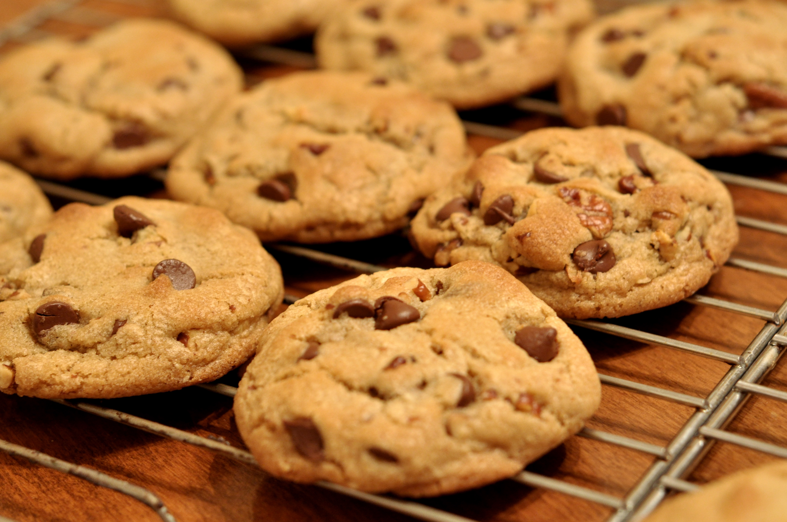

Required Recipies
Chocolate Chip Cookies
Recipe by: Dora, found on allrecipes.com

Image by: Kimberly Vardeman from Lubbock, TX, USA, CC BY 2.0 https://creativecommons.org/licenses/by/2.0, via Wikimedia Commons
Ingredients
- 3 cups All-purpose Flour
- 2 cups Chocolate Chips
- 1 cup Butter
- 1 cup White Sugar
- 1 cup Chopped Walnuts (optional)
- 2 Large Eggs
- 2 teaspoons Vanilla Extract
- 2 teaspoons Hot water
- 1 teaspoon Baking Soda
- 1/2 teaspoon Salt
Equipment
- Electric Mixer
- Oven
- Large Bowl
- Baking Sheets
- Baking pan
Directions
- Preheat your oven to 350° F.
- In a large bowl, beat butter, white sugar, and brown sugar with an electric mixer until the batter is smooth
- Beat in the eggs one at a time into the batter
- Stir in the vanilla extract
- Dissolve baking soda in hot water
- Add baking soda and salt into the batter
- Stir in flour, chocolate chips, and walnuts (optional) into the batter
- Drop spoonfuls of dough 2 inches apart onto ungreased baking sheets
- Bake the cookies in the oven until their edges are browned, about 10 minutes
- Let cookies cool on the baking sheet before cooling them on a wire rack.
This page created as academic activity only.